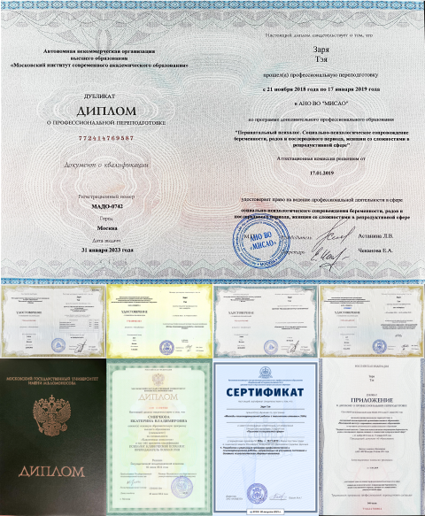

Постоянное чувство тревоги, депрессивные, подавленные
состояния
Непонимание себя, чего хочется и хочется ли вообще
Страх, стыд, обида, вина, гнев
Неуверенность в себе, в своих силах, низкая самооценка
Научиться справляться со своими эмоциями
Перепады настроения, чувство одиночества
Постоянное чувство тревоги, депрессивные, подавленные состояния
Непонимание себя, чего хочется и хочется ли вообще
Страх, стыд, обида, вина, гнев
Неуверенность в себе, в своих силах, низкая самооценка
Научиться справляться со своими эмоциями
Перепады настроения, чувство одиночества
Обо мне
— Я Тэя Заря, дипломированный психолог, эксперт в сфере работы
с дискомфортными чувствами.
Моё образование помогает мне комплексно работать с различными
запросами (различными сферами), а авторская методика решать
один запрос в 80% случаев за пару сессий.
Более 9 лет веду частную практику консультирования и
немедицинской психотерапии.
На данный момент работаю медицинским психологом в Научном
центре психического здоровья.
Помогаю клиентам чувствовать себя спокойно и уверенно при
решении повседневных задач и выполнении ключевых действий.
Специализируюсь на работе со страхами, неуверенностью,
перенапряжением, эмоциональным выгоранием, переживанием
синдрома самозванца.
Я придерживаюсь научного подхода, принципов работы мозга и
психики. Преимущественно работаю методом психотерапевтической
беседы.
Образование

В 2014 году окончила МГУ Ломоносова по специальности
«Клинический психолог. Психолог. Преподаватель психологии» с
правом ведения немедицинской психотерапии
В 2015 году прошла повышение квалификации в Московском
Институте психоанализа по направлению «суггестивная
психология» (Эриксоновский гипноз)
В 2015 году прошла повышение квалификации в Московском
Институте психоанализа по направлению «Сексология 21 века» у
Александра Полеева
В 2016 году прошла повышение квалификации «Гипнотерапия
психосоматических расстройств»
С 2018 по 2019 прошла профессиональную переподготовку
«Перинатальный психолог. Психологическое сопровождение женщин
со сложностями в репродуктивной сфере»
С 2019 по 2021 вела профессиональный блог mamasays_yes,
который помогал женщинам обрести счастье материнства, пик
аудитории 12 тыс. подписчиков
В 2019 году прошла повышение квалификации «Психосоматические
нарушения в репродуктивной системе. Стратегии и тактики
психологической помощи женщинам с диагнозом бесплодие»
В 2020 прошла повышение квалификации в международном институте
практической психологии по направлению «проработка
психосоматики»
«Проработка навязчивостей и негативных убеждений»
Член Национальной Ассоциации специалистов по психосоматике с
присвоением квалификации сертифицированный психосоматолог
Работаю с различными запросами (различными сферами), а
авторская методика решать один запрос в 80% случаев за пару
сессий.
Чем мне может помочь психолог?
Психолог может помочь нам разрешить конфликты, справиться с
тревогой и стрессом, улучшить наши отношения, повысить
самооценку и достичь личностного роста.
Можно ли придти на приём с мужем?
Да. На семейной психологической сессии психолог не только
помогает наладить семейные взаимоотношения, но и учит
предотвращать спорные ситуации.
Как понять что мне нужна консультация?
5 признаков, что вам пора обратиться к психологу
Вам кажется, что вы ходите по кругу
У вас резко изменился образ жизни и режим дня
Вас все раздражает
Вы слишком много работаете
Вы делаете много рискованных поступков
Сколько всего нужно консультаций?
Обычно консультации проходят 1 раз в неделю. При острых
ситуациях можно видеться чаще. По завершении регулярных
встреч можно встречаться реже: раз в месяц.